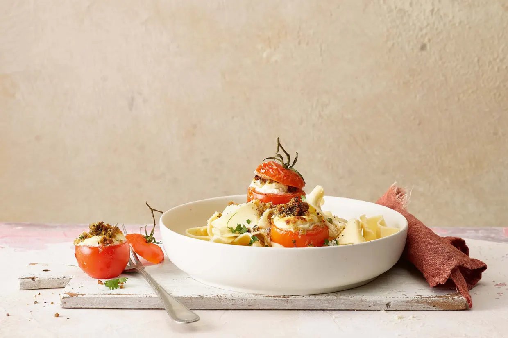

Gefüllte Tomaten mit Pappardelle
Ein elegantes Pastagericht, dass dennoch erstaunlich schnell zubereitet ist.
Zutaten:
(FÜR 2−3 PERSONEN)
- 1 Bund Frühlingszwiebel
- 1 Teelöffel Butter
- 0.5 unbehandelte Zitrone
- 6 kleinere Tomaten à je ca. 70 g, siehe Einleitung
- Salz, schwarzer Pfeffer aus der Mühle
- 150 g Ricotta
- 3 Esslöffel geriebener Parmesan
- 4 Zweige glattblättrige Petersilie
- 2 Esslöffel Paniermehl
- 1.5 Esslöffel Olivenöl
- 1.5 Esslöffel Butter
Zubereitung:
- Frühlingszwiebeln rüsten. Von 2 Zwiebeln die weissen Knollen fein hacken. Das Grün sowie die dritte Frühlingszwiebel für die Zubereitung der Papardelle beiseitelegen.
- In einer kleinen Pfanne Butter schmelzen und gehackte Zwiebeln darin glasig dünsten. Am Schluss die gelbe Schale von 1 Zitrone fein dazu reiben. In eine Schüssel geben, 1 Esslöffel Saft der Zitrone auspressen und beifügen. Leicht abkühlen lassen.
- Inzwischen von den Tomaten einen Deckel abschneiden (für einen Salat beiseitestellen) und die Tomaten aushöhlen. Diese auf der Innenseite mit Salz und Pfeffer würzen und mit der Öffnung nach unten auf Küchenpapier setzen.
- Den Backofen auf 200 Grad Umluft vorheizen.
- Ricotta und Parmesan zu den gedünsteten Zwiebeln geben, alles mischen, mit Salz und Pfeffer würzen und in einen Spritzsack füllen. Die Ricottamasse leicht bergartig in die Tomaten füllen und diese in eine Gratinform setzen. Petersilie fein hacken und mit dem Paniermehl und Olivenöl mischen. Über die Tomaten verteilen. Die Tomaten im 200 Grad heissen Ofen auf der zweituntersten Rille etwa 20 Minuten backen.
- In einer grossen Pfanne reichlich Salzwasser für die Papardelle aufkochen und diese nach Packungsangabe bissfest garen.
- Inzwischen die dritte Frühlingszwiebel rüsten und mitsamt Grün schräg in dünne Scheiben schneiden. Das Grün der beiden anderen Zwiebeln schräg in Röllchen schneiden. In einer Pfanne die Butter schmelzen und die Frühlingszwiebeln darin kurz dünsten. Mit Salz und Pfeffer würzen.
Tipps:
Elegant sieht dieses Pastagericht aus, und dennoch hält sich die Küchenarbeit in Grenzen. Wenn man es für Gäste zubereiten möchte, kann man die Tomaten auch schon am Vorabend füllen und sie bis kurz vor dem Überbacken mit Klarsichtfolie gedeckt im Kühlschrank aufbewahren. Gut geeignet sind kleinere Tomaten, z.B. die Sorten Aromatico oder Merinda.
Nährwerte:
- Pro Portion
- 1033 kKalorien
- 4322 kJoule
- 36g Eiweiss
- 55g Fett
- 95g Kohlenhydrate
Tags:
- Vegetarisch
- Gäste
- Brunch
- Ganzes Jahr
- Sommer
- Herbst
- Frühling
- Winter
- Schnell/einfach
- Ohne Fleisch